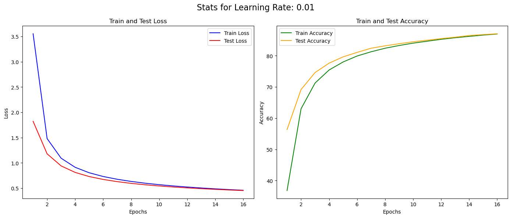
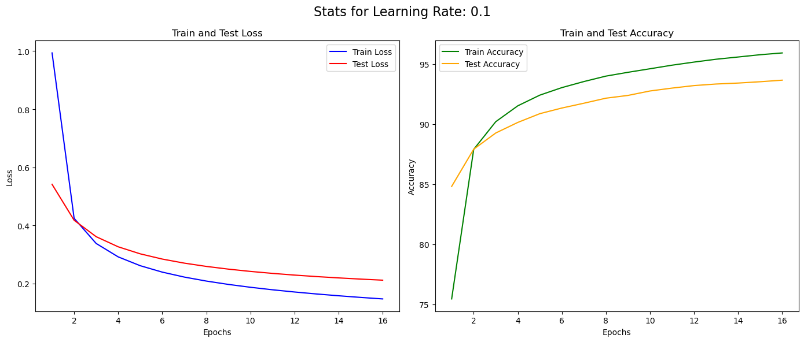
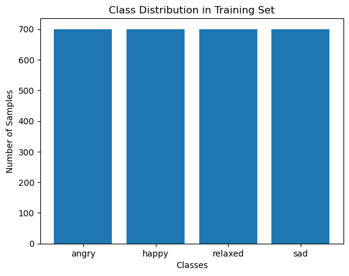
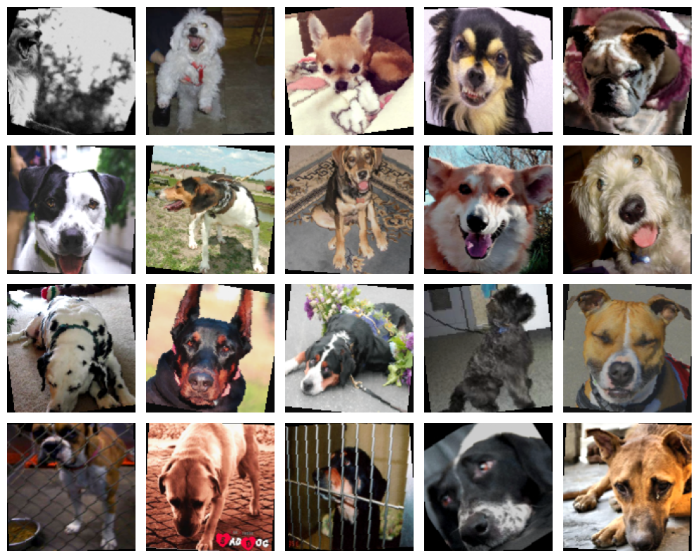
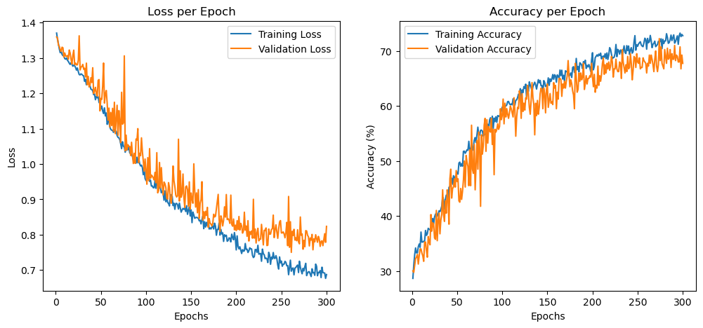
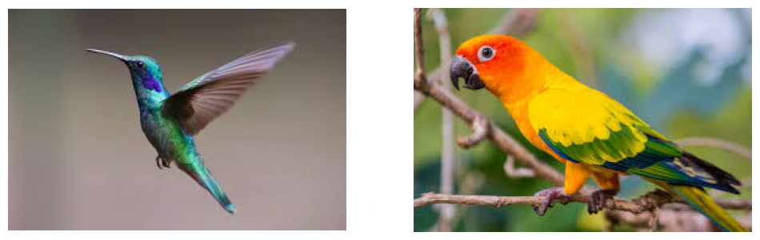
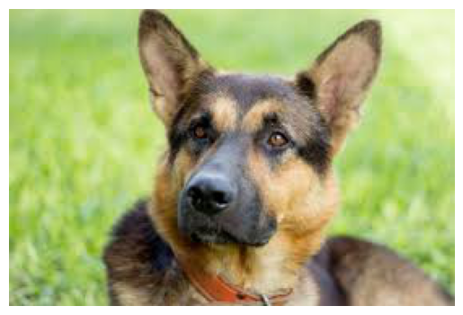
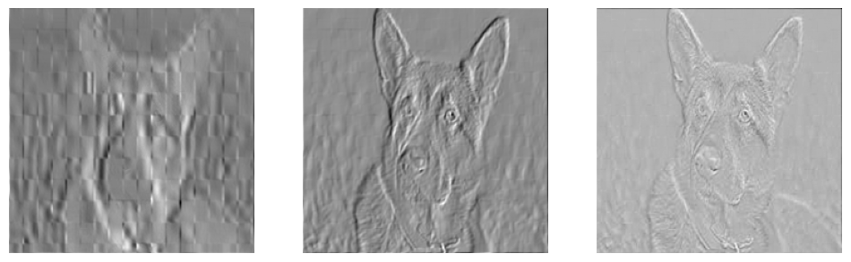

Coursework repo ML02_970209 — deep learning, generalization & generative models.
The shipped assignment (HW1) builds neural nets without autograd or torch.nn: a hand-derived
fully-connected net on MNIST, a custom CNN dog-emotion classifier, and analysis of a pretrained VGG-16.
Every figure and number below is copied from the real notebook outputs.
Hand-derive softmax Jacobian & cross-entropy gradient (∂CE/∂θ = ŷ − y). Implement derivatives of sigmoid, tanh, softmax in raw PyTorch.
2-layer fully-connected net on MNIST. Manual forward +
backprop, no backward(). Sweep learning rates.
Custom CNN "dog-emotion" classifier (4 classes), trained 300 epochs with augmentation. 100k params.
Probe a pretrained VGG-16: top-5 predictions on birds vs a dog, visualize first-conv-layer feature maps.
Hard constraint in Q2: only raw tensor ops — no auto-differentiation, no built-in losses/activations/optimizers/layers. The gradients are derived by hand and coded directly (see the Code tab).
Course syllabus (README): supervised DL (FC/CNN/RNN/GNN, Transformers, contrastive), generalization (implicit bias of SGD, PAC-Bayes, robustness, adversarial attacks & defenses), and generative models (GANs, VAEs, diffusion).
Architecture: 784 → 128 (sigmoid) → 10 (softmax),
trained 16 epochs, batch 32, seed 42. The same model is trained at three learning rates.
Pick one to plot the actual recorded train/test curves:
Repo's finding: higher learning rates converge faster and reach higher final test accuracy here, but widen the train–test gap (more overfitting). Final test accuracy: 87.0% (0.01) → 92.2% (0.05) → 93.7% (0.1).

lr = 0.01

lr = 0.1
Themed task: classify a dog's emotion so campus students know whether to pet it. Custom CNN (no pretrained weights), heavy augmentation, 300 epochs, Adam (lr 5e-4, weight-decay 1e-4) with a StepLR scheduler. Best model chosen by validation accuracy.
Classes: angry · happy · relaxed · sad
(balanced). Test loss 0.858.

Balanced class distribution

Training samples after augmentation (de-normalized)

Loss & accuracy per epoch (train vs validation)
Repo's note: the design progressively increases channel count with dropout and Leaky-ReLU / SiLU activations, an adaptive average-pool, then FC heads — reaching 67.9% test accuracy with only ~100k parameters.
Load torchvision.models.vgg16(pretrained=True),
run inference on two bird photos and one dog photo (resized 224×224, ImageNet-normalized), and inspect
first-conv-layer activations.

birds/bird_0.jpg, bird_1.jpg

dogs/dog_7.jpg
torch.topk output)| image | rank 1 | 2 | 3 | 4 | 5 |
|---|---|---|---|---|---|
| bird_0 | 94 | 95 | 92 | 84 | 128 |
| bird_1 | 90 | 88 | 11 | 92 | 95 |
| dog_7 | 235 | 227 | 225 | 174 | 273 |
Repo's observation: the two birds share overlapping top classes, while the dog yields a completely different top-5 — VGG separates the categories cleanly.

First three channels of vgg16.features[0](dog)
Repo's reading: each early filter accents different low-level cues — rough/distinct edges, then contours & textures, then finer silhouette detail.
This loads the exact weights from the
committed checkpoint HW1_ML02_model.pkl (415 KB) — the best-validation CNN from Q3 —
and runs its full forward pass in pure JavaScript on a Canvas. No server, no libraries.
Pick the bundled dog or upload your own photo; the net classifies the emotion into one of four classes:
angry · happy · relaxed · sad.
Resized to 128×128 and normalized with the dataset's channel mean/std, exactly as in training.
model input (128×128)
softmax probabilities over the 4 emotion classes
The 8 feature maps produced by the first convolutional block (Conv 3→8, k4 s2 + BatchNorm + SiLU) on your image — early filters fire on edges, colour blobs and texture. Brighter = stronger activation.
HW1_ML02_model.pkl. BatchNorm is folded
into the preceding conv at export, so the browser runs the identical eval-mode function.No autograd: gradients are the
hand-derived softmax + cross-entropy result (ŷ − y)/N, propagated through the hidden layer.
def forward(self, X): self.z1 = X @ self.W1 + self.b1 self.h = self.activation(self.z1) # sigmoid self.z2 = self.h @ self.W2 + self.b2 return softmax(self.z2) def backward(self, X, y, y_hat): n = y.size(0) dl_dz2 = (y_hat - y) / n # softmax+CE gradient dl_dW2 = self.h.T @ dl_dz2; dl_db2 = dl_dz2.sum(0) dl_dh = dl_dz2 @ self.W2.T dl_dz1 = dl_dh * self.d_activation(self.z1) dl_dW1 = X.T @ dl_dz1; dl_db1 = dl_dz1.sum(0) self.W2 -= self.lr*dl_dW2; self.b2 -= self.lr*dl_db2 # manual SGD self.W1 -= self.lr*dl_dW1; self.b1 -= self.lr*dl_db1
def d_sigmoid(x): return torch.exp(-x) / (1 + torch.exp(-x))**2 def d_softmax(x): s = softmax(x) if len(x.shape) == 1: return torch.diag(s) - torch.outer(s, s) # Jacobian return torch.diag_embed(s) - torch.bmm(s.unsqueeze(-1), s.unsqueeze(1))
The dry part proves
∂softmax_i/∂x_k = softmax_i(δ_ik − softmax_k) and that the cross-entropy gradient collapses to
ŷ − y.